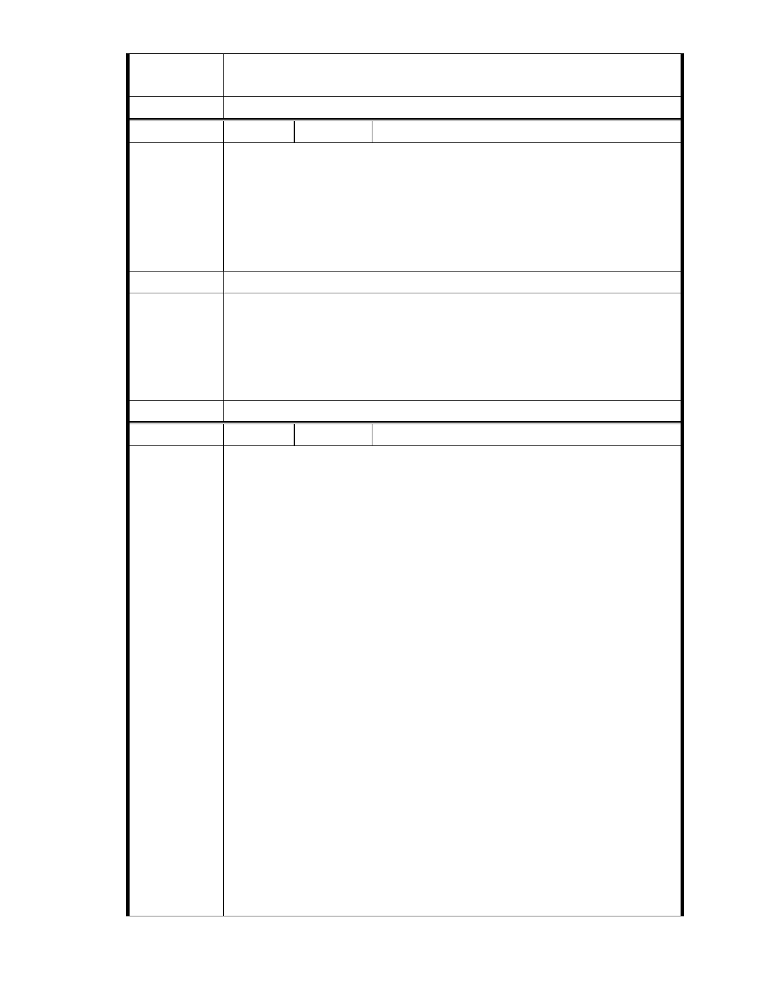

為準。
二、相關陳情意見將納入本案審查人民意見，依法定程序辦理。
委 員 會 決 議 同編號 1。
編號
陳情理由
建議辦法
市府說明
委員會決議
27 陳情人 市長信箱（ MA201011170014 ）
姑且不論其目的為何，但該地區本身為保護區，不論進行何種發展項目
或建設應依循保護區之理念目的與宗旨，應增加留給後代的綠地面積而
非為了短期的利益而使打著公益團體的財團獲利，今日若將此建案列為
重大建設發展，實為蒙蔽市民進行變賣祖產的行為．而都市計畫委員會
內１５名委員均為政府綁案，如何將正確且專業的意見實施於市政之上
呢？
一、本案申請範圍於慈濟購得前已遭填平破壞作汽車停車場使用，已長
年不具保護區之功能；目前申請方案較先前方案已大幅降低開發強
度、調整使用項目並承諾大面積滯洪設施等回饋事項，顯示申請單
位欲改善環境現況之誠意。
二、相關陳情意見將納入本案審查人民意見，依法定程序辦理。
同編號 1。
編
號 28
陳情人 市長信箱（ MA201011220252 ）
主旨：為慈濟基金會申請變更保護區為社會福利特定專用區案陳請堅守
台北市保護區政策。
內容：郝市長：您好！
慈濟基金會於民國 86 年明知座落於內湖區大湖公園旁之保護區土地是台
北市政府基於保安、水土保持、維護天然資源及保護生態功能而劃定之
保護區，不得從事開發行為，但仍貪圖保護區地價便宜，有恃無恐地購
入環境敏感性非常高之土地 10 幾公頃，並且自 94 年起一而再、再而三
地，仗著宗教勢力，打著「社會福利旗幟」，企圖掩蓋破壞環境與衝撞台
北市保護區政策之事實，強行遊說台北市政府都市計畫委員將其基地之
一部分（4.48 公頃）變更為「社會福利特定專用區」，讓其可興建 54,750
陳情理由
平方公尺（約 16,562 坪）之樓地板面積。本案自申請個案變更迄今已歷
5 年餘，96 年 8 月至 99 年 8 月整整 3 年間申請作業幾乎完全停頓，外界
以為有高度智慧之「上人」已指示不要繼續申請開發了，沒想到慈濟基
金會於今年 9 月五都選舉已進入緊鑼密鼓時刻，趁機又再動起來。本開
發案不僅本身暴露於潛在災害風險地區，且會加重周邊地區之潛在災害
風險，以及嚴重破壞環境與生態。因此，建議台北市政府都市計畫委員
會應堅守既定之保護區政策，明確否決本變更案，否則後果不堪設想，
因為此例一開，台北市之保護區政策將從此開始瓦解；另建議與慈濟基
金會協調將其所擁有之 10 多公頃土地全部恢復為池塘，作為滯洪、蓄洪、
生態復育、以及景觀維護之用；再則，目前基地上疑似違規使用之行為
亦建請查明，若查明屬實則應立即取締，並追究市府相關人員管理不周
之責任。文化大學景觀學系教授楊重信敬上
- 33 -